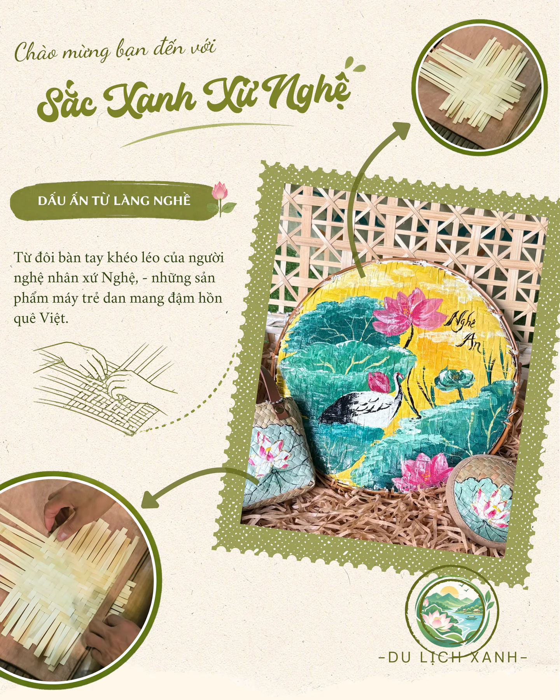
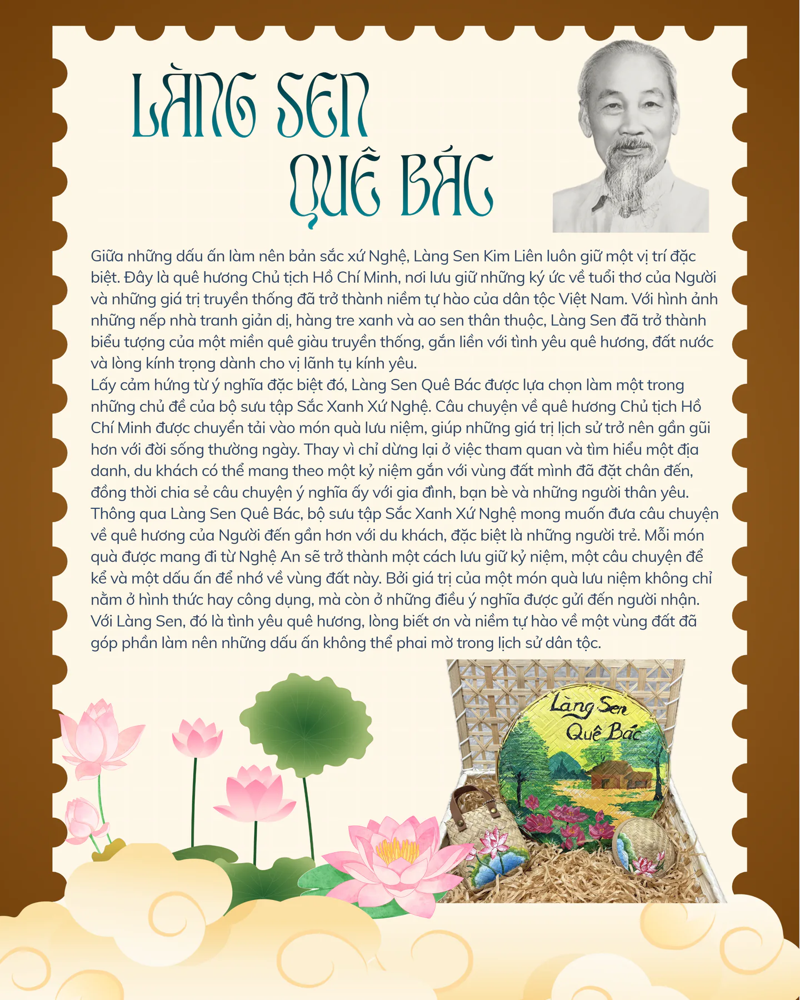
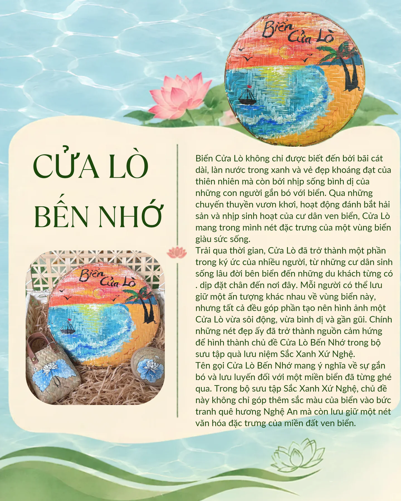
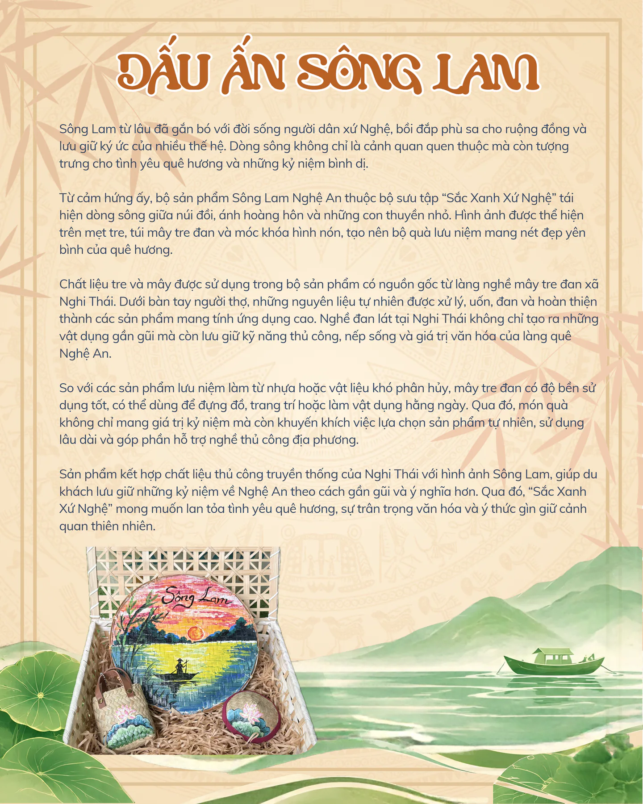
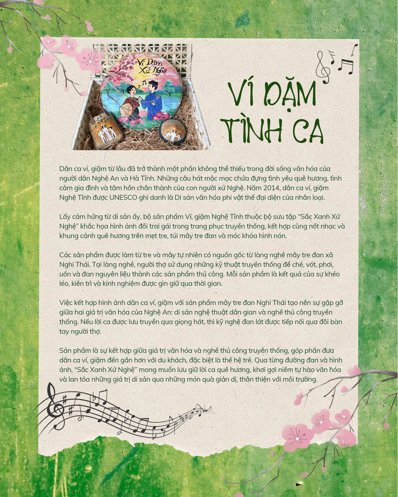

Sắc Xanh Xứ Nghệ

Từ đôi bàn tay khéo léo của người nghệ nhân xứ Nghệ, những sản phẩm mây tre đan mang đậm hồn quê Việt.
Làng Sen quê Bác

Làng Sen Kim Liên với những mái nhà giản dị, hàng tre xanh và ao sen hồng từ lâu đã trở thành hình ảnh thân thuộc của quê hương Nghệ An. Đây không chỉ là quê hương Chủ tịch Hồ Chí Minh mà còn là nơi lưu giữ những giá trị văn hóa và truyền thống tốt đẹp của người Việt.
Lấy cảm hứng từ vẻ đẹp ấy, bộ sản phẩm Làng Sen Kim Liên thuộc bộ sưu tập “Sắc Xanh Xứ Nghệ” ra đời nhằm đưa hình ảnh quê hương đến gần hơn với du khách. Trên chiếc mẹt tre là khung cảnh ngôi nhà quê bên hồ sen, kết hợp cùng chiếc túi và móc khóa hình nón được trang trí đồng điệu, tạo nên bộ quà lưu niệm mang đậm dấu ấn văn hóa Việt Nam.
Điểm đặc biệt của sản phẩm là sự kết hợp giữa hình ảnh Làng Sen và chất liệu mây tre đan truyền thống. Những vật liệu gần gũi với thiên nhiên được người thợ khéo léo tạo hình, vừa có giá trị thẩm mỹ, vừa có thể sử dụng hoặc trưng bày trong đời sống hằng ngày.
Không chỉ là món quà lưu niệm, bộ sản phẩm còn góp phần quảng bá văn hóa địa phương, tôn vinh nghề thủ công truyền thống và khuyến khích du lịch gắn với thiên nhiên. Qua từng đường đan và hình ảnh hoa sen, “Sắc Xanh Xứ Nghệ” mong muốn gửi đến du khách một món quà giản dị nhưng ý nghĩa, giúp lưu giữ những ký ức đẹp về quê Bác và vùng đất Nghệ An thân thương.
Cửa Lò bến nhớ

Biển Cửa Lò với bãi cát dài, làn nước xanh và những con thuyền vươn khơi là hình ảnh đặc trưng của quê hương Nghệ An. Không chỉ là điểm đến nghỉ dưỡng, nơi đây còn gắn liền với cuộc sống bình dị của người dân miền biển.
Lấy cảm hứng từ vẻ đẹp ấy, bộ sản phẩm Biển Cửa Lò thuộc bộ sưu tập “Sắc Xanh Xứ Nghệ” tái hiện khung cảnh biển xanh, bờ cát vàng, hàng dừa và những con thuyền nhỏ. Hình ảnh được thể hiện trên mẹt tre, túi mây tre đan và móc khóa hình nón, tạo nên bộ quà lưu niệm mang đậm dấu ấn vùng biển.
Sản phẩm không chỉ gợi nhớ những kỷ niệm bên biển mà còn gửi gắm thông điệp bảo vệ môi trường, giữ gìn cảnh quan và hạn chế rác thải nhựa. Với chất liệu thủ công gần gũi thiên nhiên, bộ quà tặng mong muốn đưa vẻ đẹp Cửa Lò đến gần hơn với du khách, lưu giữ những ký ức đáng nhớ về biển quê hương.
Dấu ấn Sông Lam

Sông Lam từ lâu đã gắn bó với đời sống người dân xứ Nghệ, bồi đắp phù sa cho ruộng đồng và lưu giữ ký ức của nhiều thế hệ. Dòng sông không chỉ là cảnh quan quen thuộc mà còn tượng trưng cho tình yêu quê hương và những kỷ niệm bình dị.
Từ cảm hứng ấy, bộ sản phẩm Sông Lam Nghệ An thuộc bộ sưu tập “Sắc Xanh Xứ Nghệ” tái hiện dòng sông giữa núi đồi, ánh hoàng hôn và những con thuyền nhỏ. Hình ảnh được thể hiện trên mẹt tre, túi mây tre đan và móc khóa hình nón, tạo nên bộ quà lưu niệm mang nét đẹp yên bình của quê hương.
Chất liệu tre và mây được sử dụng trong bộ sản phẩm có nguồn gốc từ làng nghề mây tre đan xã Nghi Thái. Dưới bàn tay người thợ, những nguyên liệu tự nhiên được xử lý, uốn, đan và hoàn thiện thành các sản phẩm mang tính ứng dụng cao. Nghề đan lát tại Nghi Thái không chỉ tạo ra những vật dụng gần gũi mà còn lưu giữ kỹ năng thủ công, nếp sống và giá trị văn hóa của làng quê Nghệ An.
So với các sản phẩm lưu niệm làm từ nhựa hoặc vật liệu khó phân hủy, mây tre đan có độ bền sử dụng tốt, có thể dùng để đựng đồ, trang trí hoặc làm vật dụng hằng ngày. Qua đó, món quà không chỉ mang giá trị kỷ niệm mà còn khuyến khích việc lựa chọn sản phẩm tự nhiên, sử dụng lâu dài và góp phần hỗ trợ nghề thủ công địa phương.
Sản phẩm kết hợp chất liệu thủ công truyền thống của Nghi Thái với hình ảnh Sông Lam, giúp du khách lưu giữ những kỷ niệm về Nghệ An theo cách gần gũi và ý nghĩa hơn. Qua đó, “Sắc Xanh Xứ Nghệ” mong muốn lan tỏa tình yêu quê hương, sự trân trọng văn hóa và ý thức gìn giữ cảnh quan thiên nhiên.
Ví Dặm tình ca

Dân ca ví, giặm từ lâu đã trở thành một phần không thể thiếu trong đời sống văn hóa của người dân Nghệ An và Hà Tĩnh. Những câu hát mộc mạc chứa đựng tình yêu quê hương, tình cảm gia đình và tâm hồn chân thành của con người xứ Nghệ. Năm 2014, dân ca ví, giặm Nghệ Tĩnh được UNESCO ghi danh là Di sản văn hóa phi vật thể đại diện của nhân loại.
Lấy cảm hứng từ di sản ấy, bộ sản phẩm Ví, giặm Nghệ Tĩnh thuộc bộ sưu tập “Sắc Xanh Xứ Nghệ” khắc họa hình ảnh đôi trai gái trong trang phục truyền thống, kết hợp cùng nốt nhạc và khung cảnh quê hương trên mẹt tre, túi mây tre đan và móc khóa hình nón.
Các sản phẩm được làm từ tre và mây tự nhiên có nguồn gốc từ làng nghề mây tre đan xã Nghi Thái. Tại làng nghề, người thợ sử dụng những kỹ thuật truyền thống để chẻ, vót, phơi, uốn và đan nguyên liệu thành các sản phẩm thủ công. Mỗi sản phẩm là kết quả của sự khéo léo, kiên trì và kinh nghiệm được gìn giữ qua thời gian.
Việc kết hợp hình ảnh dân ca ví, giặm với sản phẩm mây tre đan Nghi Thái tạo nên sự gặp gỡ giữa hai giá trị văn hóa của Nghệ An: di sản nghệ thuật dân gian và nghề thủ công truyền thống. Nếu lời ca được lưu truyền qua giọng hát, thì kỹ nghệ đan lát được tiếp nối qua đôi bàn tay người thợ.
Sản phẩm là sự kết hợp giữa giá trị văn hóa và nghề thủ công truyền thống, góp phần đưa dân ca ví, giặm đến gần hơn với du khách, đặc biệt là thế hệ trẻ. Qua từng đường đan và hình ảnh, “Sắc Xanh Xứ Nghệ” mong muốn lưu giữ lời ca quê hương, khơi gợi niềm tự hào văn hóa và lan tỏa những giá trị di sản qua những món quà giản dị, thân thiện với môi trường.
Vuốt hoặc dùng phím ← → để lật trang